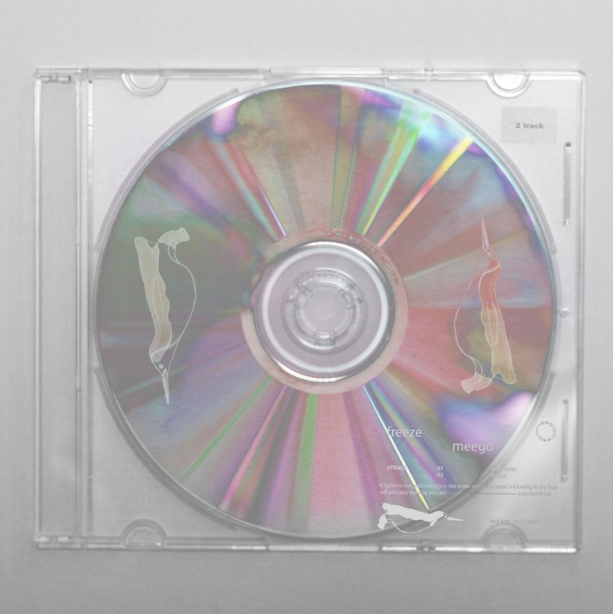
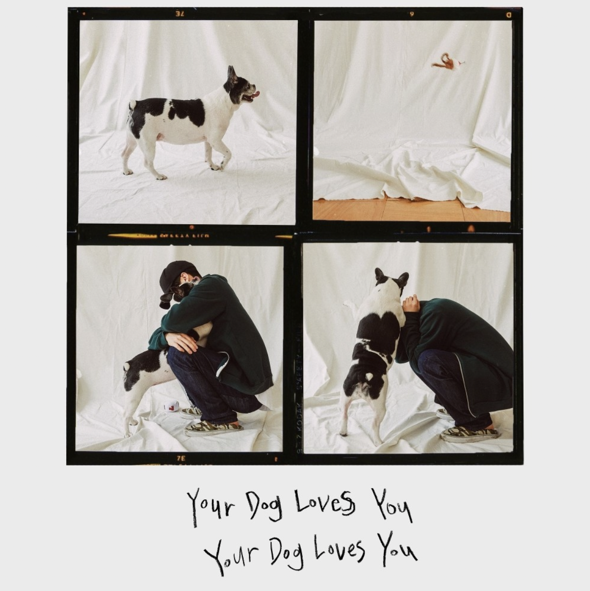
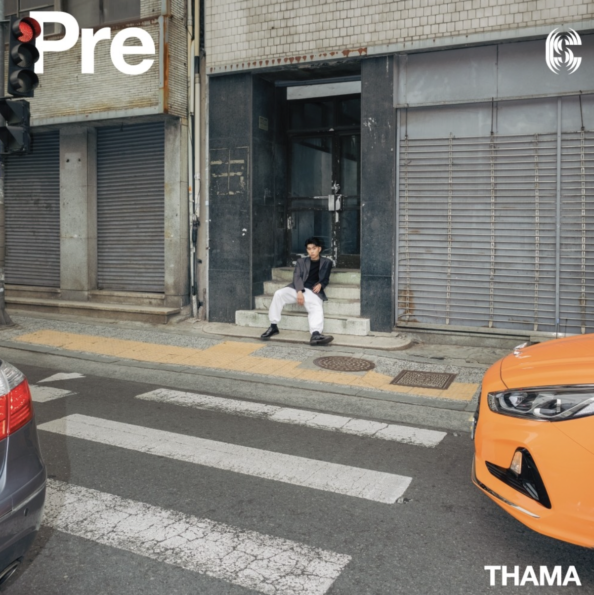
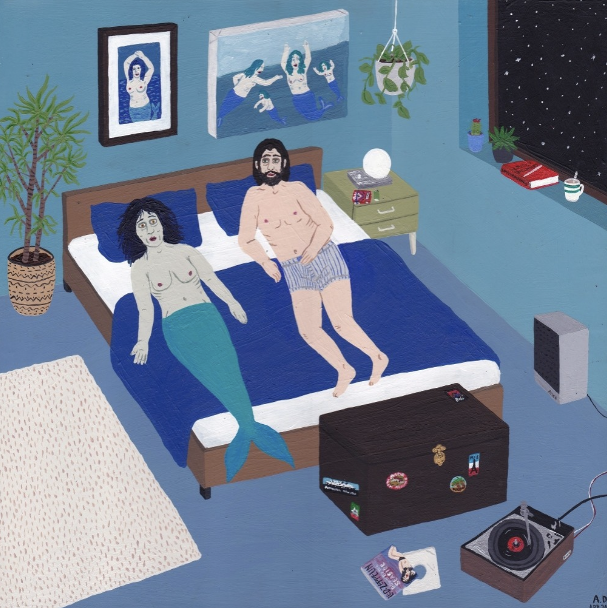

|  |  |  |  | |
|
1974 live
Devita |
Freeze (Feat.Summer Soul)
Meego |
Your Dog Loves You (Feat. Crush)
Colde |
2G Love (Feat. SOLE)
THAMA |
Can I Love ? (Feat. 유라(youra), Meego)
Cosmic Boy |
유튜브로 음악 듣기 원하는 음악의 앨범 이미지를 클릭해보세요!